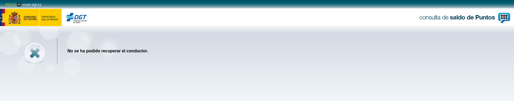

Certificado digital de persona física
Tarea 1: Instalación del certificado
1. Una vez que hayas obtenido tu certificado, explica brevemente como se instala en tu navegador favorito.
Una vez hemos solicitado y descargado nuestro certificado digital, se nos guardará en forma de una especie de carpeta/fichero que son los que tendremos que utilizar.
En mi caso utilizo Mozilla Firefox, por tanto lo voy a instalar en este navegador.
Nos dirigimos al menú de Preferencias del navegador, y en el apartado de Privacidad & Seguridad, nos desplazamos hasta la último opción, llamada Certificados. Aquí haremos click en Ver certificados y se nos abrirá una pequeña ventana en la que tendremos distintas secciones. Nos interesa la sección Sus certificados, y aquí haremos click en Importar y se nos abrirá una ventana donde tendremos que seleccionar el certificado que hemos descargado antes, y con esto, ya tendremos instalado nuestro certificado en nuestro navegador.
2. Muestra una captura de pantalla donde se vea las preferencias del navegador donde se ve instalado tu certificado.
3. ¿Cómo puedes hacer una copia de tu certificado? ¿Como vas a realizar la copia de seguridad de tu certificado? Razona la respuesta.
En la ventana de la imagen anterior, si seleccionamos nuestro certificado, y seleccionamos la opción Hacer copia... y elegimos una ruta en nuestro PC, habremos hecho una copia del certificado instalado.
...
...
...
...
4. Investiga como exportar la clave pública de tu certificado.
Para exportar nuestra clave pública, debemos hacer doble click en nuestro certificado, y se nos abrirá una nueva pestaña con la información del certificado. Nos dirigimos hasta el apartado Información de clave pública y aquí encontraremos nuestra clave pública y ya podremos exportarla y compartirla:

Tarea 2: Validación del certificado
1. Instala en tu ordenador el software autofirma y desde la página de VALIDe, valida tu certificado. Muestra capturas de pantalla donde se comprueba la validación.
Para instalar Autofirma sobre Debian, tenemos que tener en cuenta que necesitamos tener instalado Java. Para instalar Java ejecutamos:
sudo apt install default-jdk openjdk-11-jdk libnss3-tools -y
Verificamos la versión instalada:
javier@debian:~/Descargas/AutoFirma_Linux$ java -version openjdk version "11.0.9" 2020-10-20 OpenJDK Runtime Environment (build 11.0.9+11-post-Debian-1deb10u1) OpenJDK 64-Bit Server VM (build 11.0.9+11-post-Debian-1deb10u1, mixed mode, sharing)
Ahora nos descargamos el programa de instalación de Autofirma desde este enlace.
Una vez descargado y descomprimido, instalamos el paquete .deb:
sudo dpkg -i AutoFirma_1_6_5.deb
Y ya tendríamos instalado Autofirma. Comprobamos que lo podemos abrir:

Para validar nuestro certificado, nos dirigimos a la página de VALIDe y al apartado Validar Certificado. Seleccionamos el certificado mediante el software de Autofirma:

Seleccionamos nuestro certificado y hacemos click en Validar, y obtendremos una respuesta sobre sí el certificado es válido o no. En mi caso:
Tarea 3: Firma electrónica
1. Utilizando la página VALIDe y el programa Autofirma, firma un documento con tu certificado y envíalo por correo a un compañero.
Con Autofirma:
Para firmar un documento con nuestro certificado y el programa Autofirma, seleccionamos Seleccionar ficheros a firmar:
Seleccionamos el documento que deseamos firmar:

Seleccionamos con que certificado queremos firmar el documento:
Guardamos el fichero ya firmado con nuestro certificado:

Vemos que ya hemos firmado y guardado el documento firmado:

Con Valide:
Para firmar un documento con mi certificado y el programa Valide, nos dirigimos a la página de VALIDe y al apartado Realizar Firma.
Seleccionamos el documento que deseamos firmar:

Seleccionamos con que certificado queremos firmar el documento:

Vemos que ya hemos firmado el documento pero aún no lo hemos guardado en nuestro equipo:
Guardamos el fichero ya firmado con nuestro certificado:
Vemos que ya hemos firmado y guardado el documento firmado:

Ya dispongo de los documentos firmados, llamados documentofirmadoautofirma.txt_signed.csig y documentofirmadovalide.txt.csig, y se lo envío a mi compañero Álvaro.
2. Tu debes recibir otro documento firmado por un compañero y utilizando las herramientas anteriores debes visualizar la firma (Visualizar Firma) y (Verificar Firma). ¿Puedes verificar la firma aunque no tengas la clave pública de tu compañero? ¿Es necesario estar conectado a internet para hacer la validación de la firma? Razona tus respuestas.
He recibido de Álvaro los documentos ficheroautofirma.txt_signed.csig y ficherovalide.txt_signed.csig.
Con Autofirma:
En el programa Autofirma seleccionamos la opción Ver firma:

Seleccionamos el fichero del cuál queremos ver la firma:
Nos sale que está firmado por Álvaro:

Con Valide:
3. Entre dos compañeros, firmar los dos un documento, verificar la firma para comprobar que está firmado por los dos.
Tarea 4: Autentificación
1. Utilizando tu certificado accede a alguna página de la administración pública (cita médica, becas, puntos del carnet,…). Entrega capturas de pantalla donde se demuestre el acceso a ellas.
Voy a intentar consultar mis puntos del carnet de conducir, utilizando mi certificado digital.
Me dirijo a la web llamada Consulta tus puntos de la DGT, y aquí indico que me voy a identificar mediante Clave:
Vemos que tenemos distintas posibilidades para identificarnos, yo selecciono Certificado Electrónico. Como tengo instalado mi certificado en este navegador, me lo reconoce automáticamente y me pregunta si quiero acceder:
Le digo que sí y automáticamente nos hemos identificado con nuestra certificado digital y nos proporciona la siguiente información:

Sale este mensaje porque aún no me he sacado el carnet jajajaja.
HTTPS / SSL
Antes de hacer esta práctica vamos a crear una página web (puedes usar una página estática o instalar una aplicación web) en un servidor web apache2 que se acceda con el nombre tunombre.iesgn.org.
Tarea 1: Certificado autofirmado
Esta práctica la vamos a realizar con un compañero. En un primer momento un alumno creará una Autoridad Certficadora y firmará un certificado para la página del otro alumno. Posteriormente se volverá a realizar la práctica con los roles cambiados.
Para hacer esta práctica puedes buscar información en internet, algunos enlaces interesantes:
- Phil’s X509/SSL Guide
- How to setup your own CA with OpenSSL
- Crear autoridad certificadora (CA) y certificados autofirmados en Linux
El alumno que hace de Autoridad Certificadora deberá entregar una documentación donde explique los siguientes puntos:
1. Crear su autoridad certificadora (generar el certificado digital de la CA). Mostrar el fichero de configuración de la AC.
mkdir CA
cd CA/
mkdir ./{certsdb,certreqs,crl,private}
chmod 700 ./private
touch ./index.txt
cp /usr/lib/ssl/openssl.cnf ./
nano openssl.cnf
root@https:~/CA# openssl req -new -newkey rsa:2048 -keyout private/cakey.pem -out careq.pem -config ./openssl.cnf Generating a RSA private key ............................................+++++ ..............................................................................+++++ writing new private key to 'private/cakey.pem' Enter PEM pass phrase: Verifying - Enter PEM pass phrase: ----- You are about to be asked to enter information that will be incorporated into your certificate request. What you are about to enter is what is called a Distinguished Name or a DN. There are quite a few fields but you can leave some blank For some fields there will be a default value, If you enter '.', the field will be left blank. ----- Country Name (2 letter code) [ES]: State or Province Name (full name) [Sevilla]: Locality Name (eg, city) [Dos Hermanas]: Organization Name (eg, company) [JavierPerez Corp]: Organizational Unit Name (eg, section) [Informatica]: Common Name (e.g. server FQDN or YOUR name) []:javier.debian Email Address []:javierperezhidalgo01@gmail.com root@https:~/CA#
root@https:~/CA# openssl ca -create_serial -out cacert.pem -days 365 -keyfile private/cakey.pem -selfsign -extensions v3_ca -config ./openssl.cnf -infiles careq.pem
Using configuration from ./openssl.cnf
Enter pass phrase for private/cakey.pem:
Check that the request matches the signature
Signature ok
Certificate Details:
Serial Number:
0a:7b:37:65:ef:20:c3:8c:e9:00:00:d2:54:7c:35:69:7c:0b:29:3d
Validity
Not Before: Nov 17 18:43:27 2020 GMT
Not After : Nov 17 18:43:27 2021 GMT
Subject:
countryName = ES
stateOrProvinceName = Sevilla
organizationName = JavierPerez Corp
organizationalUnitName = Informatica
commonName = javier.debian
emailAddress = javierperezhidalgo01@gmail.com
X509v3 extensions:
X509v3 Subject Key Identifier:
92:F5:19:9E:24:0D:30:B0:83:14:FA:D5:74:BC:25:79:0F:9F:19:CD
X509v3 Authority Key Identifier:
keyid:92:F5:19:9E:24:0D:30:B0:83:14:FA:D5:74:BC:25:79:0F:9F:19:CD
X509v3 Basic Constraints: critical
CA:TRUE
Certificate is to be certified until Nov 17 18:43:27 2021 GMT (365 days)
Sign the certificate? [y/n]:y
1 out of 1 certificate requests certified, commit? [y/n]y
Write out database with 1 new entries
Data Base Updated
root@https:~/CA#
2. Debe recibir el fichero CSR (Solicitud de Firmar un Certificado) de su compañero, debe firmarlo y enviar el certificado generado a su compañero.
cp /home/javi/javierpzh_key.pem /certreqs
root@https:~/CA# openssl ca -config openssl.cnf -out certsdb/alvaro.crt -infiles certreqs/alvaro.csr
Using configuration from openssl.cnf
Enter pass phrase for /root/CA/private/cakey.pem:
Check that the request matches the signature
Signature ok
Certificate Details:
Serial Number:
0a:7b:37:65:ef:20:c3:8c:e9:00:00:d2:54:7c:35:69:7c:0b:29:3e
Validity
Not Before: Nov 17 18:48:00 2020 GMT
Not After : Nov 17 18:48:00 2021 GMT
Subject:
countryName = ES
stateOrProvinceName = Sevilla
organizationName = JavierPerez Corp
organizationalUnitName = Informatica
commonName = alvaro.iesgn.org
emailAddress = avacaferreras@gmail.com
X509v3 extensions:
X509v3 Basic Constraints:
CA:FALSE
Netscape Comment:
OpenSSL Generated Certificate
X509v3 Subject Key Identifier:
6C:6E:4C:23:03:A7:E9:64:DC:0B:F3:5B:79:97:9A:2C:BE:FB:3D:22
X509v3 Authority Key Identifier:
keyid:92:F5:19:9E:24:0D:30:B0:83:14:FA:D5:74:BC:25:79:0F:9F:19:CD
Certificate is to be certified until Nov 17 18:48:00 2021 GMT (365 days)
Sign the certificate? [y/n]:y
1 out of 1 certificate requests certified, commit? [y/n]y
Write out database with 1 new entries
Data Base Updated
root@https:~/CA#
root@https:~/CA# cp certsdb/alvaro.crt /home/alvaro/
3. ¿Qué otra información debes aportar a tu compañero para que éste configure de forma adecuada su servidor web con el certificado generado?
root@https:~/CA# cp cacert.pem /home/alvaro/
El alumno que hace de administrador del servidor web, debe entregar una documentación que describa los siguientes puntos:
1. Crea una clave privada RSA de 4096 bits para identificar el servidor.
root@https:~# openssl genrsa 4096 > /etc/ssl/private/javi.key Generating RSA private key, 4096 bit long modulus (2 primes) ................................................................................................................................................++++ ............................++++ e is 65537 (0x010001) root@https:~#
2. Utiliza la clave anterior para generar un CSR, considerando que deseas acceder al servidor tanto con el FQDN (tunombre.iesgn.org) como con el nombre de host (implica el uso de las extensiones Alt Name).
root@https:~# openssl req -new -key /etc/ssl/private/javi.key -out ./javi.csr You are about to be asked to enter information that will be incorporated into your certificate request. What you are about to enter is what is called a Distinguished Name or a DN. There are quite a few fields but you can leave some blank For some fields there will be a default value, If you enter '.', the field will be left blank. ----- Country Name (2 letter code) [AU]:ES State or Province Name (full name) [Some-State]:Sevilla Locality Name (eg, city) []:Dos Hermanas Organization Name (eg, company) [Internet Widgits Pty Ltd]:AlvaroVaca Corp Organizational Unit Name (eg, section) []:Informatica Common Name (e.g. server FQDN or YOUR name) []:javierpzh.iesgn.org Email Address []:javierperezhidalgo01@gmail.com Please enter the following 'extra' attributes to be sent with your certificate request A challenge password []: An optional company name []: root@https:~#
3. Envía la solicitud de firma a la entidad certificadora (su compañero).
root@https:~# scp javi.csr javi@172.22.200.186:/home/javi/ javi@172.22.200.186's password: javi.csr 100% 1801 980.4KB/s 00:00
4. Recibe como respuesta un certificado X.509 para el servidor firmado y el certificado de la autoridad certificadora.
root@https:~# scp javi@172.22.200.186:/home/javi/javier.crt ./ javi@172.22.200.186's password: javier.crt 100% 6284 1.9MB/s 00:00 root@https:~/CA# scp javi@172.22.200.186:/home/javi/cacert.pem ./ javi@172.22.200.186's password: cacert.pem 100% 4658 1.7MB/s 00:00
5. Configura tu servidor web con https en el puerto 443, haciendo que las peticiones http se redireccionen a https (forzar https).
6. Instala ahora un servidor nginx, y realiza la misma configuración que anteriormente para que se sirva la página con HTTPS.